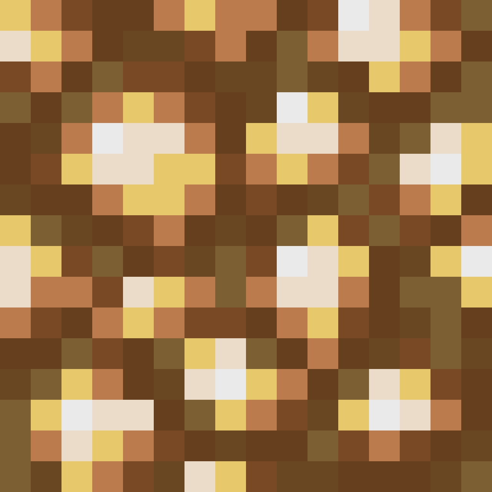
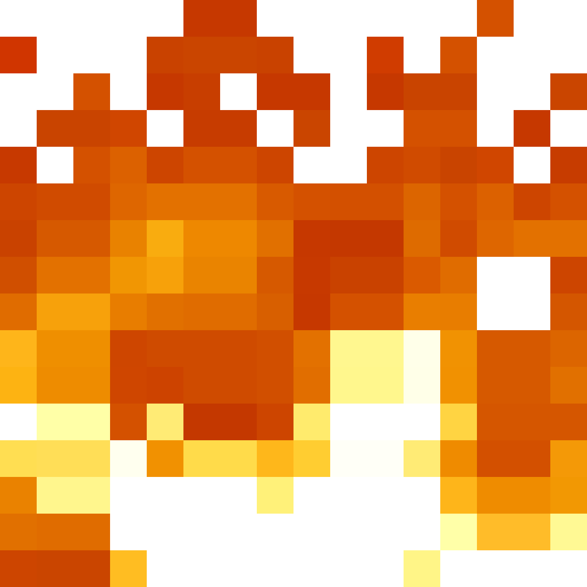
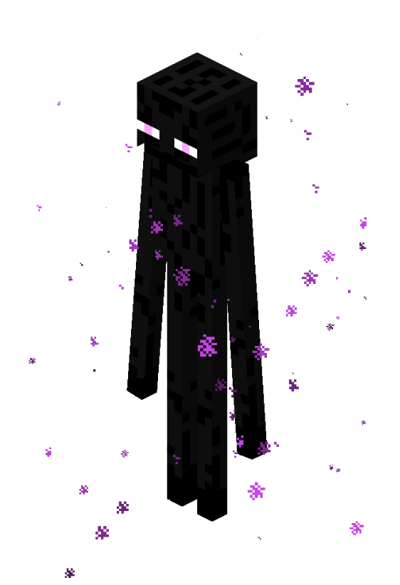

AI로 전신 사진을 나만의 마인크래프트 스킨으로


GitHub 계정으로 로그인하면 댓글이 본인 리포의 GitHub Discussions에 자동 저장됩니다.
![[사진 → 마인크래프트 스킨 변환기] 데모 화면](screenshot.png)
💬 이 프로젝트 어떠세요?
GitHub 계정으로 로그인하면 댓글이 본인 리포의 GitHub Discussions에 자동 저장됩니다.